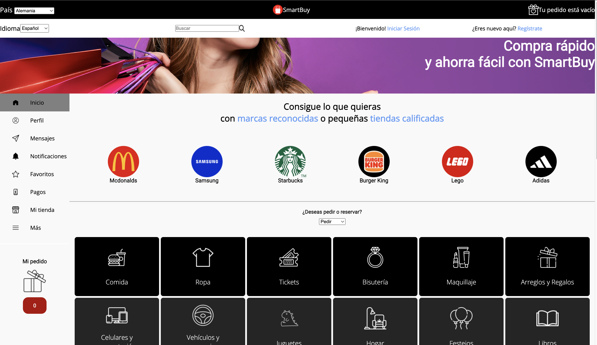
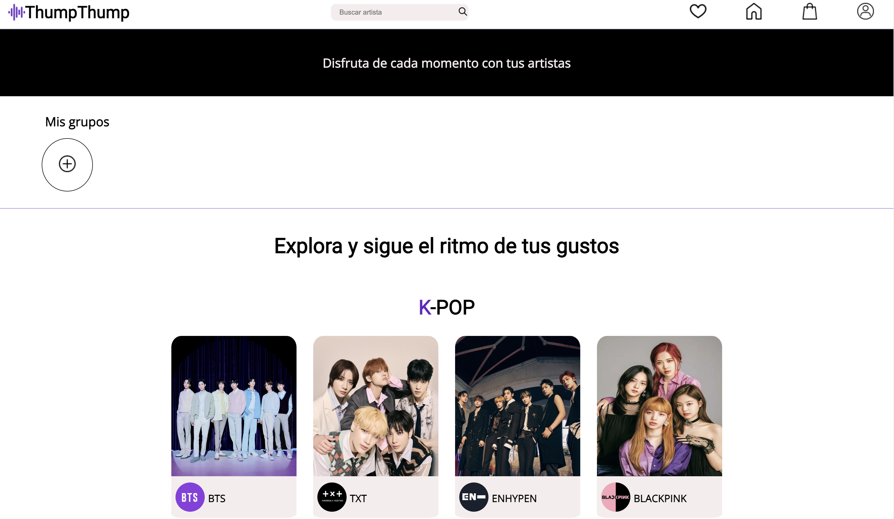
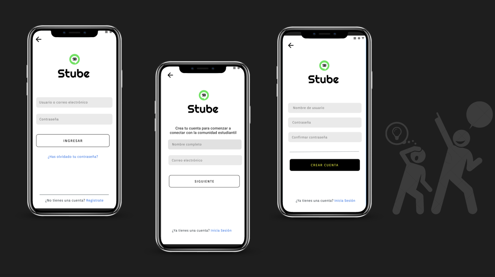
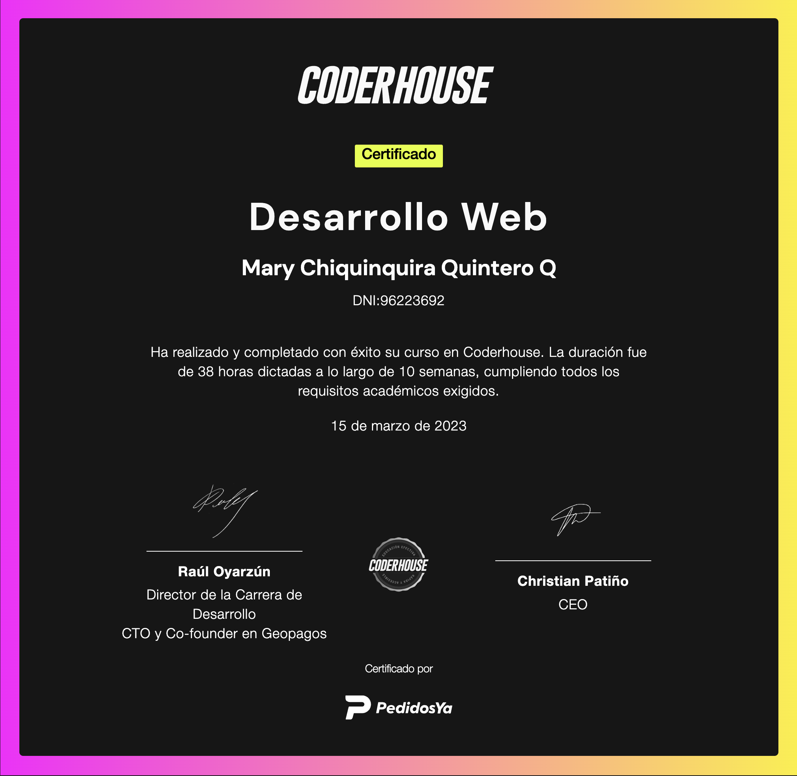
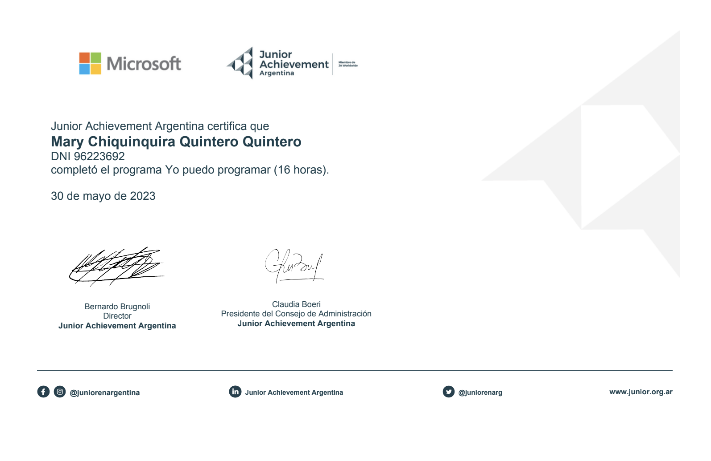

Mi pasión por construir soluciones inéditas que mejoren la vida de las personas me trajo al maravilloso mundo de la programación a finales del año 2022.
Como programadora, disfruto crear proyectos desafiantes, tener la oportunidad de pensar fuera de la caja y poder profundizar mis conocimientos cada dia.
Recientemente me transladé a USA en búsqueda de desafíos, oportunidades y nuevos proyectos.
<Mary Ch Quintero Quintero/>
<¡Soy Chiqui 👩🏻💻!/>
Frontend Developer
De Venezuela viviendo en USA en búsqueda de nuevos desafíos y experiencias.
Actualmente estoy realizando una diplomatura en Desarrollo Web Full Stack con la Universidad Tecnologica Nacional de 🇦🇷 con una beca de la Fundación Empujar.
<HERRAMIENTAS/>
- HTML5
- CSS3
- JAVASCRIPT
- REACT
- BOOTSTRAP
- SASS
- GIT & GITHUB
- DISEÑO RESPONSIVO
- FIGMA
Software
Visual Studio Code
Idiomas
ESPAÑOL/ NATIVO
INGLÉS/ B2
COREANO/ BÁSICO
<PROYECTOS/>

SmartBuy
Ecommerce para ventas, compras y reservas. Contruido con HTML, CSS Y SASS | Navega las secciones construidas siguiendo los pasos propuestos en Figma

Thumpthump
Sitio web para facilitar la comunicación entre artistas y fanaticada| Navega las secciones construidas siguiendo los pasos propuestos en Figma

Stube
App construida en el entorno de App Inventor. Red social creada para promover el desarrollo del sentido de propósito en jóvenes en el mundo | Navega las secciones construidas siguiendo los pasos propuestos en Figma
<EDUCACIÓN/>
Te invito a conocer
algunas de mis capacitaciones

Diplomatura en Desarrollo Web Full Stack | UTN

Desarrollo Web | Coderhouse

Yo puedo Programar | Junior Achievement
Capacitación de empleabilidad | Fundación Empujar
<CONTACTO/>
Mi bandeja de entrada está siempre abierta para consultas,
proyectos o simplemente si deseas pasar a decir “Hola👋!”.
Responderé tu mensaje lo antes posible!
Puedes escribirme en sciencesmary@gmail.com
Puedes escribirme en sciencesmary@gmail.com
CHIQUI